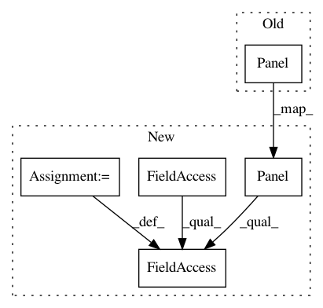

a47cf1097754f7108c7f2b698c34bf3ca311b044,cellprofiler/gui/preferencesview.py,PreferencesView,__init__,#PreferencesView#Any#,38
Before Change
DEFAULT_OUTPUT_FOLDER_HELP,
[cpprefs.set_default_output_directory,
self.__notify_pipeline_list_view_directory_change])
self.__odds_and_ends_panel = wx.Panel(panel,-1)
self.__make_odds_and_ends_panel()
self.__status_text = wx.StaticText(panel,-1,style=wx.SUNKEN_BORDER,label=WELCOME_MESSAGE)
self.__progress_panel = wx.Panel(panel, -1)
self.__make_progress_panel()
After Change
[cpprefs.set_default_image_directory,
self.__notify_pipeline_list_view_directory_change],
refresh_action = self.refresh_input_directory)
self.__output_folder_panel = wx.Panel(panel)
self.__output_folder_panel.AutoLayout = True
self.__output_edit_box = self.__make_folder_panel(
self.__output_folder_panel,
cpprefs.get_default_output_directory(),
lambda : cpprefs.get_recent_files(cpprefs.DEFAULT_OUTPUT_DIRECTORY),
In pattern: SUPERPATTERN
Frequency: 3
Non-data size: 5
Instances
Project Name: CellProfiler/CellProfiler
Commit Name: a47cf1097754f7108c7f2b698c34bf3ca311b044
Time: 2013-04-26
Author: leek@broadinstitute.org
File Name: cellprofiler/gui/preferencesview.py
Class Name: PreferencesView
Method Name: __init__
Project Name: CellProfiler/CellProfiler
Commit Name: 8c9fe1b80d6caa3b2d13a0e366ce2e5b3c4a8e2a
Time: 2013-08-30
Author: leek@broadinstitute.org
File Name: cellprofiler/gui/plateviewer.py
Class Name: PlateViewer
Method Name: __init__
Project Name: CellProfiler/CellProfiler
Commit Name: c557ec9e035dffa2e33247eb28c57023e15e25e1
Time: 2013-08-28
Author: leek@broadinstitute.org
File Name: cellprofiler/gui/plateviewer.py
Class Name: PlateViewer
Method Name: __init__